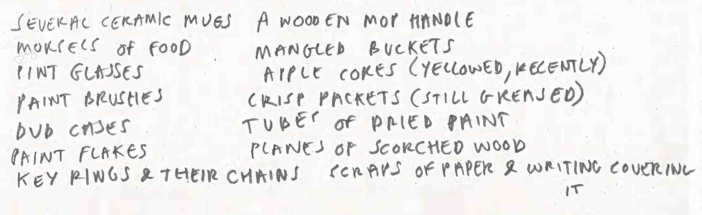

At the site, energy is required, which presupposes a source. Throughout human history, the excesses of wind, wave and light have been exploited to animate and alleviate the burdens of daily life. Before dawn, perhaps a portable electric generator can be transported from a nearby farmhouse, and dragged across a field on some wheelsX. Let there be light. Floodlights ignited, their bulbs peer down into the pit beneath the tent. Fold-out tables line the walls; geode samples and lumps of clay, removed from the hole, are arranged in gridded profile. Measuring instruments flank their edges, forming a half-drawn city plan across which a halogen sun, half-risen, shadows hundreds of tiny eclipses.
The generator, presupposing power and infrastructure, performs its task, attempting to become a seamless element in an overall system. Fuel is needed, sure - usually petrol or butane or some other combustible, and it might be added in the form of a liquid, and initially by hand, so someone will have to tend to that. Introducing the hand into the system drags the body that’s attached, burdening the system with human needs (a cooler filled with food bought the previous evening from a nearby petrol-station), water (four two-liter bottles of), shelter (the tent above) and rest (two red camping chairs in a dark corner), all of which will have had to themselves be extracted, manufactured, shipped, purchased, transported, carried and arranged here for tonight, when the task is to be carried out.
It is worth mentioning, also, the importance of connection within such systems, the individual components of which will, for now, be termed as homogenising agents - elements such as wiring, tubing, gauzing and piping: conduits that are used to integrate elements into the system which renders each part of equal importance as every other, whilst these elements themselves become invisible, hidden within casings or behind other fixtures which run along the tent’s edges, tucked away. In the farmhouse outside, the facility of the home is such that these wires are able to run like rodents behind the walls of the living room, or along its very edges in the silence that corners and shadows require. By this logic of efficiency, the concepts of quietness and minimal optics are themselves valuable systemic components. The negative visibility of these elements presupposes our ability to spot, to notice and to ignore. In order to ‘miss’ something, one must survey the space around the thing in the first instance, detect a pattern, and then choose whether to believe or to not believeY; to admit to remembering what has been forgotten behind others. The most important thing is that these - often the most functional and used parts of the system - are also the most neglected; that they are willfully made to become nothing, to be absent, acting as part of the void offered up by the background of the image, the set, or the life.
The hole, by its very nature, is withdrawal. It’s presence, enacted through its negativity, both embodies and is embodied by the noticing of an absence, where other, unsolid matter must occupy the space that its existence creates. The temporariness of the site mirrors that of the hole: the equipment must go soon, collapsed, folded, put away. It is there to be put up and taken down, or to put it another way, to be offered and later withdrawn. The hole holds, as a container or vessel does - firstly by taking up (through the removal of debris, the literal taking up(wards) of matter enables the hole to take up more space, returning debris, samples and objects to the surface above via the workers), and then, secondly, by putting down ( the hole offers more things that are recognizable through their own negativity, both in necessary and abstract terms, such as darkness, absence, landslides, suffocation; disaster; a likeness to a pit or a cave or even a movie theater, seen close up and in HD with surround sound; the cinematic). The hole can be seen as an endless accumulation of fluctuating potentials, where it is constantly becoming more empty and bigger, or more full and smaller.
More samples are collected and arranged under the light of the tables, with some beginning to resemble objects with familiar formal or material properties. There is no way to express their laden nature, the strangeness of encountering familiar goods encased in rocks, caked in silt or clumps of earth-matter. Listed below:
as if the earth had swallowed an entire domicile, before moving onwards as if nothing had happened.
In spite of the generator’s sound, the sides of the hole become invisible against the night. No light within; sediment is hoisted up in buckets on pullies before being piled outside; the tent slowly becoming surrounded by burial mounds. The pocked surface of the field is seen from from above, a slow, vertiginous zoom outwards. Looking up at the moon, casting it as a head, a great looming portrait: the grey surface is populated with billions of tiny instances. The cellular geometry of the facial structure becomes continental; wrinkles become leylines. Imperfections are the mountain ranges and craters become keystones in entire identities. And the pores: distant archipelagos.
As dawn finally breaks, the workers leave, moving to the next site through the flapping doorway. With no one to refuel the generator, it will surely fail. As it does, the lights will flicker, leaving ghostly imprints on the inside surface of the eyelids: a mathematically perfect corner in three parts, where soil meets tent flap meets the breaking dawn on the horizon; the blurred constellation of numbers and shadows across the faux-wooden tabletops, a great indecipherable code of the objects accrued across a lifetime. The sag of the empty camping chairs in the break area, threatening some kind of return, a glimmer amid their deadness. The high-contrast of the wagon, chrome-black steel tubing - an equal part of the system of things that made it all happen here.